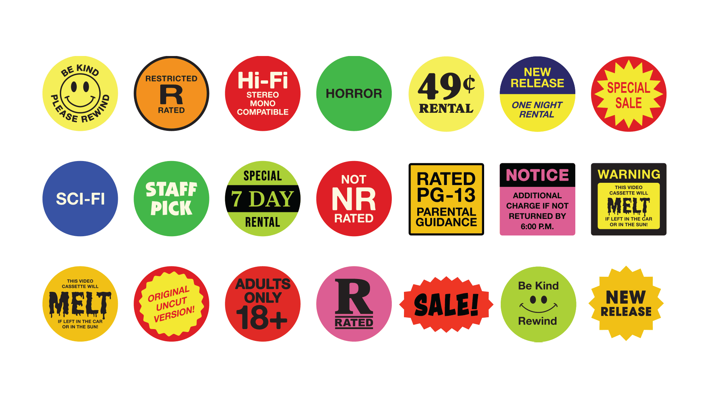
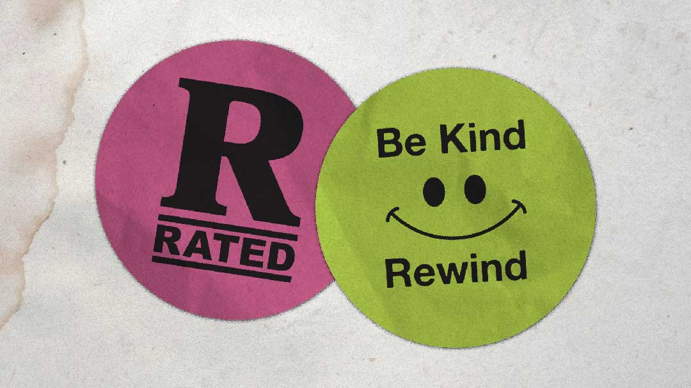

← Return to Homepage — VHS Stickers

VHS Stickers
Need to add some retro flair to one of your designs? Throwing on a couple of VHS rental stickers is a good way to score some nostalgia points. These designs were inspired by stickers found in the movie rental stores of yesteryear. (Huge shoutout to the book Stuck On VHS.)
This pack includes an Illustrator file and 21 slightly-distressed PNG files ready to drop into your project. All images included are free for personal and commercial use. However, these were based on existing stickers created by unknown desginers.


Download
Asset Details
Released: 2022
Style: 1990s Video Store
Includes: 21 icons (Ai + PNG)
References
Usage Rights
This is a free asset.
Commercial use is allowed.
Attribution is not required.